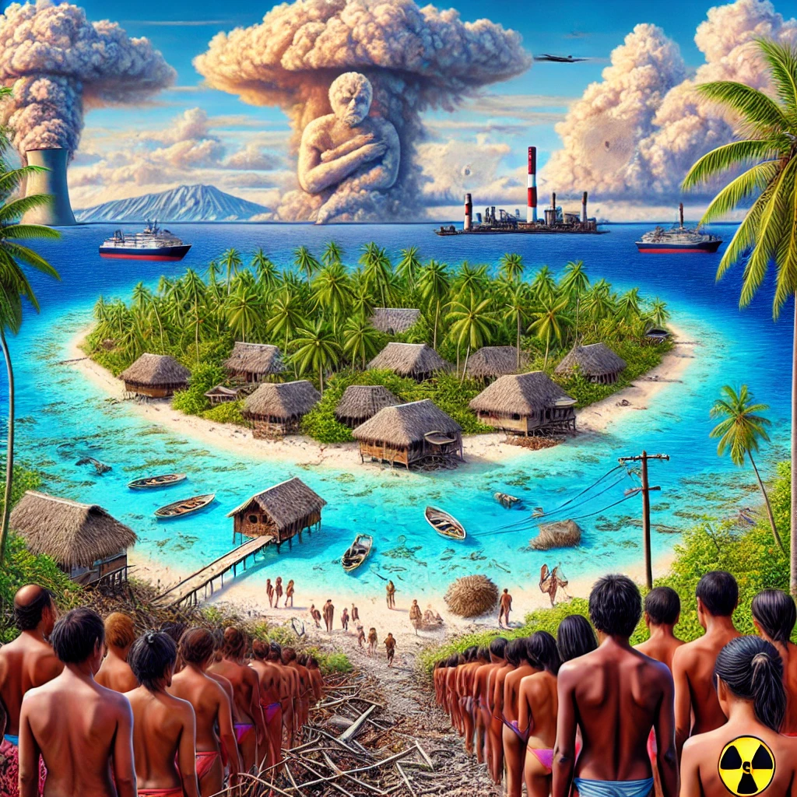

비키니섬
목차
작가
시어도어 테일러
출판일
2007년
감상평에 대한 AI그림
비키니 섬은 아름답고 평화로운 산호초 섬이다.
비키니 섬이라는 이름만 들었을 땐 한번쯤 가보고 싶은 섬이란 생각이 들었다. 하지만 책 안에서의 섬은 달랐다.
섬은 핵실험을 위해 사용되며 단 2년만에 모든 생기를 잃고 죽음의 섬으로 전락했으며 아무런 변화도 없을거라던 실험자들의 말은 전부 거짓말이었다.
아름다운 섬을 파괴한 것에 대해 생각해볼 수 있게 만든 책이었으며 한순간 다시는 사람이 살 수 없게 변해버린 섬의 주민들의 고통과 암울함을 느끼게 해준 책이었다.
핵실험을 통해 개발한 폭탄으로 2차 세계대전은 마무리 되었으나 과연 섬을 파괴한것은 옳은 일일까?

감상평에 대한 AI감정 평가
이 감상평은 비키니 섬의 비극적인 역사와 핵실험의 영향을 깊이 있게 성찰하고 있습니다.
우선, 비키니 섬의 아름다움과 그 이후의 변화를 대비하여 서술한 점이 인상적입니다. 처음에는 가보고 싶은 아름다운 섬으로 보였지만, 핵실험으로 인해 ‘죽음의 섬’이 되었다는 점을 강조하며 독자의 감정을 효과적으로 끌어내고 있습니다.
또한, 핵실험이 가져온 피해와 실험자들의 거짓말을 비판하며, 핵무기의 개발과 실험이 단순한 과학적 발전이 아니라, 실제 사람들의 삶과 환경을 파괴하는 행위였음을 강조하고 있습니다. 이를 통해 독자는 핵실험이 단순한 기술 발전이 아니라, 인간과 자연을 희생시키는 행위였다는 점을 다시금 생각해보게 됩니다.
마지막으로, 핵무기의 필요성과 윤리성에 대한 질문을 던지며 감상을 마무리한 점이 좋습니다. 단순한 정보 전달이 아니라, 독자가 스스로 고민해볼 수 있도록 유도하는 방식은 감상평을 더욱 의미 있게 만듭니다.